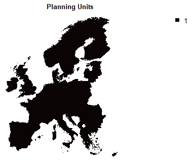
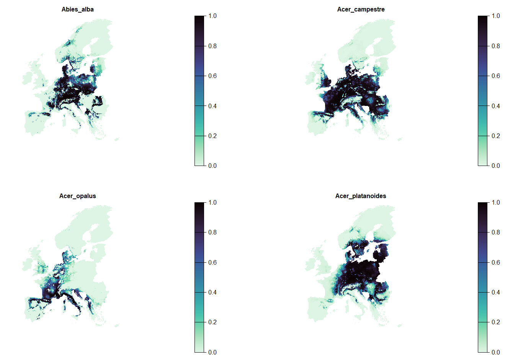
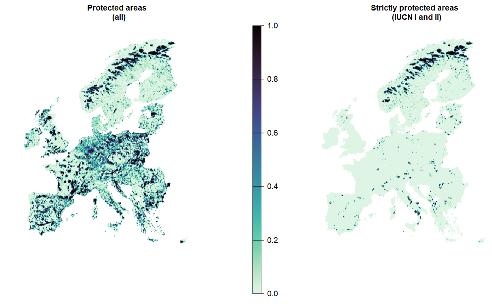
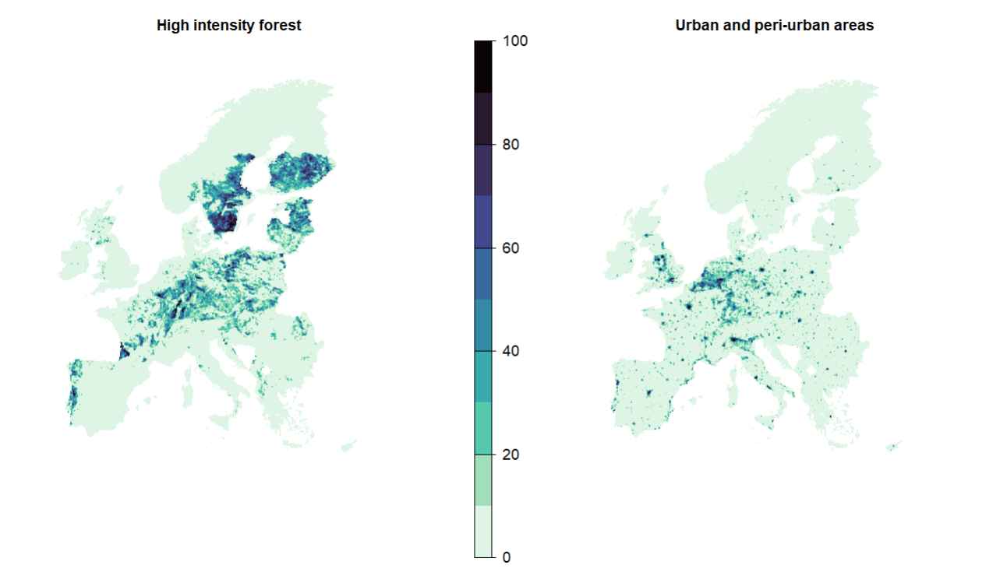
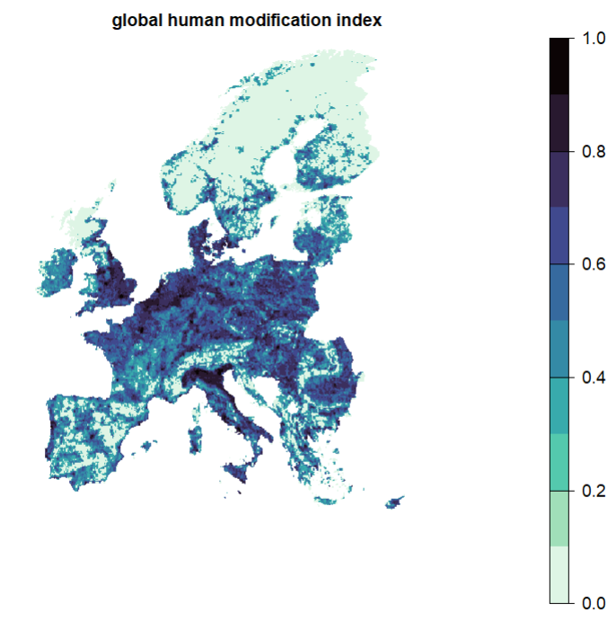
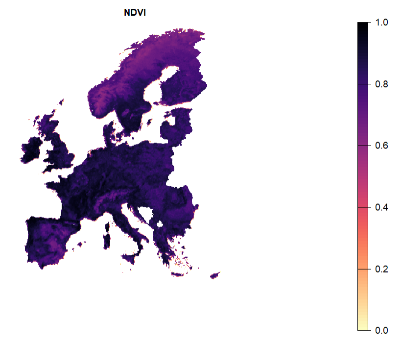

# Required packages
library(terra)
library(viridisLite)
# Load the Planning unit
PU <- rast("data/PlanningUnits.tif")
plot(PU, col = viridisLite::mako(n = 1))2 Obtaining data for the course
To get started, please download the data from github from here. Unzip the data into a folder called data to follow along with the tutorial. Alternatively you can also fork or clone the entire tutorial from github if you feel comfortable with git (A version control system).
2.1 Description of testing data
Specifically this folder contains:
Species Distributions: - species distributions modelled under current and future (rcp 8.5) climate for 67 tree species. Note: all spatial raster data is at ~10x10 km resolution (WGS84) and harmonized spatially.
other data including a
planning units raster
NDVI : proxy for dense and healthy vegetation cover.
ghm: global human modification index. For further details on the species distributions, NDVI and GHM layers, see https://github.com/zonationteam/Zonation5-training/tree/main/2024%20Europe/Exercises/data
urban_prct and HI_forest_prct.tif : percentage coverage per 10x10 grid cell of urban/periurban, and high-intensity forests, respectively. Aggregated to 10x10k from European land systems dataset by Dou et al ., 2021, originally at 1km resolution.
protectedareas.tif : all protected areas for the study area from WDPA
protectedareas_I_II.tif : strictly protected areas (IUCN categories I and II) for the study area from WDPA
species_red_list.csv : global and European assessment of conservation status of these 67 species
All data have been originally extracted and prepared by Thiago Cavalcante for this course and the Zonation 5 software.
3 Loading prepared input data
In the following sections we will load and explore the various data sources used for the planning in this course.
3.1 Planning units
Planning units (PU) contains the spatial data of the study area. Although a range of different data formats are theoretical possible in prioritizr. PU are generally defined in SCP as the spatial units at which decisions are realised. For this tutorial we primarily rely on a raster format, specifically 10x10 km grid cells in Europe.
Let’s read and plot the planning units raster:

The value of the planning units can determine the cost of each planning unit in the prioritisation. In our case, we often want to reach 30% area coverage (out of total area) for example. The cost for achieving this is the amonut of land value in the Planning Units raster, here specified as equal value of 1 (so that the budget will be expressed in number of grid cells in prioritizr).
Important
Note especially when planning over larger extents the amount of area within a PU might differ depending on the geographic projection used. For this tutorial and simplicity, we rely on a longitude-latitude projection, which does not reflect area accurately (It is not an equal-area projection). In other words: PU in the north of Europe might contain less area than PU in the south of Europe despite having the same cost.
When planning your own SCP project use a geographic projection appropriate for your case study!
3.2 Features
A feature is spatial data on the distribution of a biodiversity entity, typically a species, habitat, ecosystem service or similar.
Here, we consider the SDM of 67 tree species in Europe as features. We will focus on current distributions but we also provide projected distributions under a future climate scenarip (RCP 8.5) as part of this workshop.
Let’s read the current SDM as a raster stack and plot one species as an example:
# Get the file names of the testing data
spp.list <- list.files(path = "data/SpeciesDistributions/", full.names = T, recursive = T, pattern = "tif$")
# Load all files and rename them
spp <- rast(spp.list[grep("current", spp.list)])
names(spp) <- gsub("_ens-sdms_cur2005_prob_pot", "" ,names(spp))
# Plot first four species distributions
spp |> subset(1:4) |>
plot(axes = F,col = viridisLite::mako(n = 100, direction = -1), main = c(names(spp)[1:4]))
# also load the SDM projected under climate scenario rcp 8.5
# read sdm under climate scenario rcp 8.5
spp.rcp85 <- rast(spp.list[grep("rcp85", spp.list)])
# Similarly rename feature layers by species names
names(spp.rcp85) <- gsub("_ens-sdms_rcp85_fut2065_prob_pot.tif", "" ,names(spp.rcp85))- 1
- We rename feature layers by species names. This will enable to link the features rasters to a table of feature characteristics, weights, targets, taxonomy.

3.3 Existing protected areas
Often, we do not start from scratch: we often want to identify top priorities that complement and expand on existing protected areas. See the Chapter 2 section for more information on what is contained in those two protected area layers.
# load protected areas data
PA <- rast("data/protectedareas.tif")
# load strict protected areas
stPA <- rast("data/protectedareas_I_II.tif")
plot(c(PA, stPA), axes = F, col = viridisLite::mako(n = 100, direction = -1), main = c("Protected areas \n (all)", "Strictly protected areas \n (IUCN I and II)"))
3.4 Areas under constrained use (locked-out or no-go areas)
Some areas are usually unavailable for SCP. Here we use layers of high-intensity forests and urban areas as a proxy, derived from 1km² European land systems data from Dou et al. (2021) . We lock out the planning units that have over 50% of urban and peri-urban, or over 50% of high intensity forest. In doing so, we assume that, in these high-intensity areas, conservation would likely conflict with economic interests.
## create locked out constraints to define areas that should be left out of the solution.
## from Dou et al., 2021
## aggregated at 10x10 k and aligned with the planning units raster
HI.forest <- rast("data/HI_forest_prct.tif")
urban <- rast("data/urban_prct.tif")
plot(c(HI.forest, urban), axes = F, col = viridisLite::mako(n = 10, direction = -1), main = c("High intensity forest", "Urban and peri-urban areas") )
# --- #
# For further use we make a mask to lock out these areas
locked.out <- sum(HI.forest, urban)
rclmat <- matrix(ncol = 3, nrow = 2, byrow = T,
c(0,50, 0,
50, 101, 1))
locked.out.bin <- terra::classify(locked.out, rclmat) ## convert to binary : 1 = pu that have more than 50% coverage of urban and/or HI forest.- 1
- Sum up the area shares of both classes as a proxy.
- 2
- Define a matrix for reclassification as highlighted above.

3.5 Costs
In the context of SCP Costs are typically spatially-explicit socio-economic data that can be factored into a prioritization to account for the feasibility of implementing conservation in a planning unit. In the planning they are typically used a constrain to penalize or limit the allocation of PU to a solution. There are different types of costs that commonly used:
Acquisition cost = price of land/water area
Opportunity cost = lost revenue to other land use types
Transaction cost = e.g. cost of negotiating protection
Management cost = maintenance and management of the PA
In reality, we rarely have this information and need to use proxies. Here, we use global human modification (GHM) as a proxy for socio-economic costs. Including the GHM as a cost layer would assume that highly human-dominated landscapes would be more costly to protect, than others.
gHM <- rast("data/gHM.tif")
# For simplicity we here use a threshold so that sites that have GHM index lower than specified threshold are not penalized
gHM[gHM<0.3] <- 0
plot(gHM, axes = F, col = viridisLite::mako(n = 10, direction = -1), main = "global human modification index")
3.6 Vegetation quality
NDVI is often interpreted as dense and healthy vegetation, and one may be interested in selecting sites with a higher NDVI, for example when attempting to identify Green Infrastructure sites.
ndvi <- rast("data/ndvi.tif")
3.7 Other data for the prioritization
Spatial prioritisations can also be shaped by the importance of certain feature relative to others (e.g. threat status). This can be addressed by the use of feature-specific weights.
For setting weights, we will use the red list dataset and assign higher weight to more vulnerable species, following Jung et al. (2021).
Specifically we apply weights in this example as
default weight of 1 for Least Concern species.
2 for near-threatened and data-deficient species
4 for vulnerable species
6 for endangered species
8 for critically endangered species.
## read red list information
redlist.trees <- read.csv('data/species_red_list.csv')
## assign weight based on red list status
redlist.trees$weight <- ifelse(redlist.trees$Global == "Vulnerable" | redlist.trees$Europe == "Vulnerable", 4,
ifelse(redlist.trees$Global == "Near Threatened" | redlist.trees$Europe == "Near Threatened", 2,
ifelse(redlist.trees$Global == "Data Deficient" | redlist.trees$Europe == "Data Deficient", 2, 1)))
## must be in the same order as the features (spp) rasterstack
rownames(redlist.trees) <- redlist.trees$spp_name
redlist.trees <- redlist.trees[names(spp),]Different weights are of course possible, for example by relying on expert or stakeholder feedback, evolutionary distinctiveness or cost benefits. Ultimately this is up to the spatial planner.
3.8 Targets
Another important aspect of planning are area-based targets, which define the amount of the distribution of each feature that is deemed sufficient to protect. Although one could set flat targets if there is a valid reasoning (e.g. 10% of all features), the most typical approach for targets is to use log-linear targets Rodrigues et al. (2004). Another is to use the IUCN criteria to set targets based on the minimizing extinction risk Jung et al. (2021).
Note that targets, similar as costs (see Section 3.5) can substantially drive the solution. Thus care should be taken how such targets are defined and used in SCP.
Necessity of targets
Not every objective function in prioritizr requires targets. However the specification of targets is usually recommended as it forces the planner to think about the critical question of “How much do we want and need to conserve or manage”. If such decisions are not taken by the analyst, it is usually taken by the algorithmic approach.